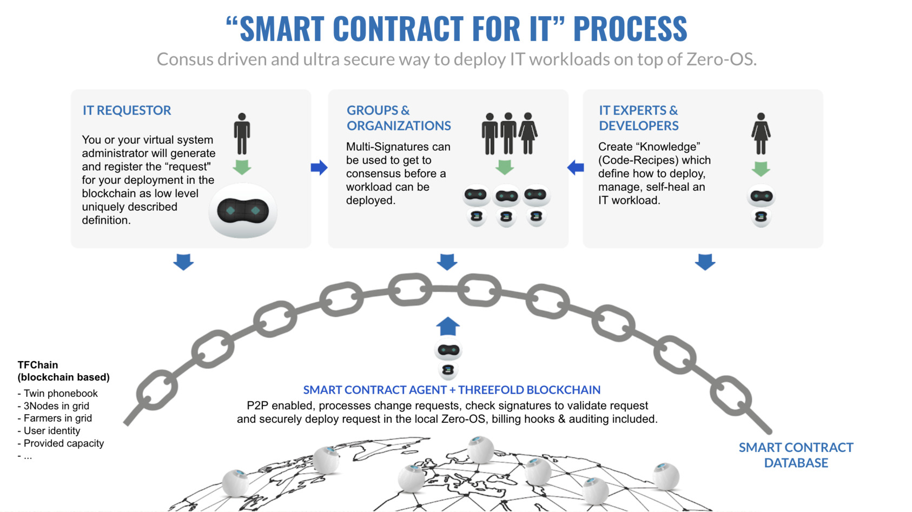

Smart Contract on TFGrid 3.0
Ability for developers to launch IT workloads on the TFGrid using our TFGrid primitives.

As from TFGrid 3.0, the 'Smart Contract for IT' concept for reserving capacity is fully decentralized and runs on TF-Chain.
Architecture
The TFChain Blockchain will keep a record of all Entities, Twins, Nodes and Farmers in the TF-Grid network. This makes it easy to integrate the Smart Contract on TFChain as well since we can read from that storage in runtime.

The Smart Contract on TFChain works as following:
1: To deploy the user creates a smart contract for IT
The user creates a contract using an SDK, user interface (browser) or the digital twin.
contract = {
version: contractVersion,
contract_id: contractID,
twin_id: NumericTwinID for the contract,
// node_address is the node address.
node_id: NumericNodeID
// data is the encrypted deployment body. This encrypted the deployment with the **USER** public key. So only the user can read this data later on (or any other key that he keeps safe).
// this data part is read only by the user and can actually hold any information to help him reconstruct his deployment or can be left empty.
data: encrypted(deployment) // optional
// hash: is the deployment predictable hash. the node must use the same method to calculate the challenge (bytes) to compute this same hash.
//used for validating the deployment from node side.
deployment_hash: hash(deployment),
// public_ips: number of ips that need to be reserved by the contract and used by the deployment
public_ips: 0,
state: ContractState (created, deployed),
public_ips_list: list of public ips on this contract
}
- The
node_idfield is the target node's ID. A user can do lookup for a node to find its corresponding ID. - The workload data is encrypted by the user and contains the workload definition for the node.
If public_ips is specified, the contract will reserve the number of public ips requested on the node's corresponding farm. If there are not enough ips available an error will be returned. If the contract is canceled by either the user or the node, the IPs for that contract will be freed.
This contract is registered on the blockchain.
2: The user sends the contractID and workload through the RMB to the destination Node.
RMB is our Reliable Message Bus, workload definitions don't get registerd on the TFChain but directly send peer2peer, this is more secure and private, the smart contract still controls the overall process.
The Node reads from the RMB and sees a deploy command, it reads the contractID and workload definition from the payload. It decodes the workload and reads the contract from chain using the contract ID, the Node will check if the user that created the contract and the deployment hash on the contract is the same as what the Node receives over RMB. If all things check out, the Node deploys the workload.
3: The Node sends consumption reports to the chain
The Node periodically sends consumption reports back to the chain for each deployed contract. The chain will compute how much is being used and will charte the user in TFT.
A report looks like:
json
{
"contract_id": contractID,
"timestamp": "timestampOfReport",
"cru": cpus,
"sru": ssdInBytes,
"hru": hddInBytes,
"mru": memInBytes,
"nru": trafficInBytes
}
Usage of SU, CU and NU will be computed based on the prices and the rules that Threefold set out for cloud pricing.
Users need to pay using TFT.
Footnote
Sending the workloads encrypted to the chain makes sure that nobody except the user can read his deployment data. It also facilitates a way for the user to recreate his workload data from the chain.
4: mutliple users can sign the smart contract for IT
It's possible to sign workloads with multiple users to deploy a workload in all security.
Users can use multisignature for this (from v3.9.0).